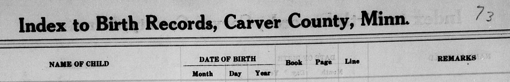
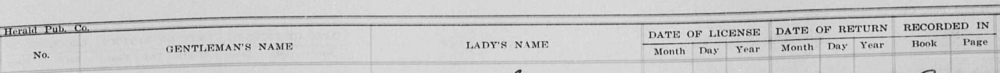
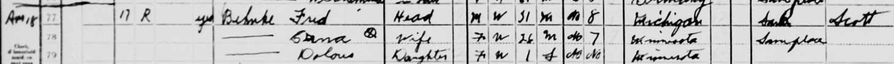

Erna Behnke (Gruenhagen)
-
Birth
- Carver, Minnesota, United States
- 16 July 1913
-
Citation: "Minnesota, County Birth Records, 1863-1983," images, FamilySearch (https://familysearch.org/ark:/61903/3:1:33S7-95NT-Q7T?cc=1920099&wc=3XSK-3TP%3A212869901%2C212901901 : 21 May 2014), Carver > Birth Index, 1892-1938 > image 71 of 281; county courthouses, Minnesota.
-
Go to Citation
- Citation Header
- Citation Row

-
Marriage to Fred H. Behnke
- Carver, Minnesota, United States
- 7 May 1938
-
Citation: "Minnesota, County Marriages, 1860-1949," database with
images, FamilySearch
(https://familysearch.org/ark:/61903/3:1:939Z-YGRK-B?cc=1803974&wc=MRJV-7M9%3A146207001
: 13 June 2016), 004539692 > image 106 of 841; county courthouses,
Minnesota.
-
Go to Citation
- This citation is an index specifying the location of the official record, it is not the official record.
- Citation Header
- Citation Row

-
1940 Census
- Resided in St Lawrence Township
- Lived with Fred
- Had 1 year old daughter named Dolores
- States that she had completed her education up to the 7th grade
- States that Fred had completed his education up to the 8th grade
- Citation: "United States Census, 1940," database with images, FamilySearch (https://familysearch.org/ark:/61903/3:1:3QS7-L9MT-CH4?cc=2000219&wc=QZXP-Y41%3A790104601%2C796596701%2C795358701%2C801157302 : accessed 18 December 2022), Minnesota > Scott > St. Lawrence Township > 70-18 St. Lawrence Township (Township 114 Range 24 (part)) outside Belle Plaine Borough > image 2 of 9; citing Sixteenth Census of the United States, 1940, NARA digital publication T627. Records of the Bureau of the Census, 1790 - 2007, RG 29. Washington, D.C.: National Archives and Records Administration, 2012.
-
Go to Citation
- Citation Rows
-
Burial
- Schlegel Cemetery
- Shares a memorial with husband Fred H.
- Blakeley Township, Scott County, Minnesota, USA
- Citation: Find a Grave, database and images (https://www.findagrave.com/memorial/74222259/erna-a-behnke: accessed 18 December 2022), memorial page for Erna A Behnke (1913–2006), Find a Grave Memorial ID 74222259, citing Schlegel Cemetery, Blakeley Township, Scott County, Minnesota, USA; Maintained by Gregory Aanenson (contributor 47230741).
- Go to Citation
- Memorial